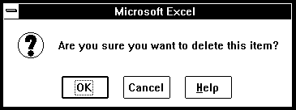
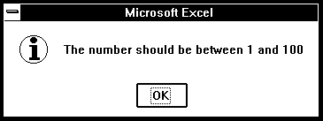
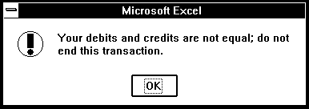
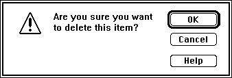

Displays a dialog box and message and waits for you to click a button. Use ALERT instead of MESSAGE if you want to interrupt the flow of a macro and force the user to make a choice or to notice an important message.
Syntax
ALERT(message_text, type_num, help_ref)
Message_text is the message displayed in the dialog box.
Type_num is a number from 1 to 3 specifying which type of dialog box to display. If you omit type_num, it is assumed to be 2.
If type_num is 1, ALERT displays a dialog box containing the OK and Cancel buttons. Click a button to continue or cancel an action. ALERT returns TRUE if you click the OK button and FALSE if you click the Cancel button. See the last example below.
If type_num is 2 or 3, ALERT displays a dialog box containing an OK button. Click the button to continue, and ALERT returns TRUE. The only difference between specifying 2 or 3 is that ALERT displays a different icon on the left side of the dialog box as shown in the examples below. So, for example, you could use 2 for notes or to present general information, and 3 for errors or warnings.
Help_ref is a reference to a custom online Help topic, in the form "filename! topic_number".
If help_ref is present, a Help button appears in the lower-right corner of the alert message. Clicking the Help button starts Help and displays the specified topic.
If help_ref is omitted, no Help button appears.
Help_ref must be given in text form.
Note In Microsoft Excel for the Macintosh, the ALERT dialog box is not a movable window.
Examples
The following dialog boxes show the results of using ALERT with type_num 1, 2, and 3. The first and fourth examples include a Help button.
In Microsoft Excel for Windows, the following macro formulas display these three dialog boxes.
ALERT("Are you sure you want to delete this item?", 1, "CUSTHELP.HLP!101")

ALERT("The number should be between 1 and 100", 2)

ALERT("Your debits and credits are not equal; do not end this transaction.", 3)

In Microsoft Excel for the Macintosh, the following macro formulas display these three dialog boxes.
ALERT("Are you sure you want to delete this item?", 1, "'Custom Help'!101")

ALERT("The number should be between 1 and 100", 2)
ALERT("Your debits and credits are not equal; do not end this transaction.", 3)
A common use of the ALERT function is to give the user a choice of two actions. The following macro formula in an Auto_Open macro asks which reference style to use when the workbook is opened.
A1.R1C1(ALERT("Click OK for A1 style; Cancel for R1C1", 1))
Related Functions
INPUT Displays a dialog box for user input
MESSAGE Displays a message in the status bar
Return to index